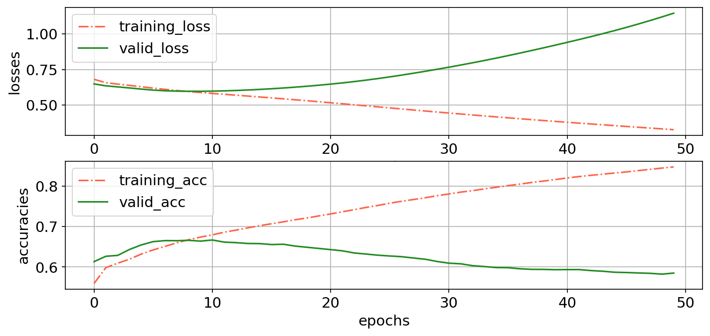

May 21,24,25, 2022: pytorch implementation of model: idea1
Contents
May 21,24,25, 2022: pytorch implementation of model: idea1¶
import os
import sys
from os.path import join as pjoin
import numpy as np
import pandas as pd
import scipy as sp
import torch
import torch.nn as nn
print(torch.cuda.is_available())
import pickle, time, random
# import neural_structured_learning as nsl
from tqdm import tqdm
import json
from itertools import combinations, product
from operator import add
import copy
# explanation tools
import captum
# plotting
import matplotlib as mpl
import matplotlib.colors as mcolors
import matplotlib.pyplot as plt
plt.rcParamsDefault['font.family'] = "sans-serif"
plt.rcParamsDefault['font.sans-serif'] = "Arial"
plt.rcParams['font.size'] = 14
plt.rcParams["errorbar.capsize"] = 0.5
import hypernetx as hnx
from networkx import fruchterman_reingold_layout as layout
# nilearn
from nilearn import image
from nilearn import masking
from nilearn import plotting
# main dirs
proj_dir = pjoin(os.environ['HOME'], 'explainable-ai')
results_dir = f"{proj_dir}/results"
month_dir = f"{proj_dir}/nb/may22"
# folders
sys.path.insert(0, proj_dir)
import helpers.pytorch.dataset_utils as dataset_utils
import helpers.pytorch.model_definitions as model_definitions
import data.emoprox2.scripts.stimulus_utils as stimulus_utils
True
device = "cuda" if torch.cuda.is_available() else "cpu"
print(f"Using {device} device")
Using cuda device
data¶
def get_data(data, subject_list):
X = []
y = []
global MASK
for subject in subject_list:
X += [torch.FloatTensor(x) for x in data[subject]['X']]
y += [torch.LongTensor(y) for y in (data[subject]['y'])]
X = nn.utils.rnn.pad_sequence(X, batch_first=True, padding_value=MASK)
y = nn.utils.rnn.pad_sequence(y, batch_first=True, padding_value=MASK)
X_len = torch.LongTensor([len(seq) for seq in X])
return X.to(device), y.to(device), X_len.to('cpu')
# return X, y, X_len
'''
target stimuli
'''
APPR, RETR = 1, 0
MASK = -100
data_file = f"{proj_dir}/data/emoprox2/idea1_data.pkl"
with open(data_file, 'rb') as f:
data = pickle.load(f)
'''
(hyper)-parameters
'''
class ARGS(): pass
args = ARGS()
args.SEED = 74
# data args
args.num_subjects = len(data.keys())
args.num_train = round(0.45 * args.num_subjects)
args.num_valid = round(0.05 * args.num_subjects)
args.num_test = round(0.5 * args.num_subjects)
# model args
args.num_units = 32 #16 #32
args.num_classes = 2 # for binary classification
args.l2 = 1e-2
args.dropout = 0.5
args.learning_rate = 4e-4
args.num_epochs = 50
args.validation_split = 0.2
args.batch_size = 64
args.return_sequences = True
'''
generate dataset for the model
'''
subject_list = list(data.keys())
random.Random(args.SEED).shuffle(subject_list)
train_list = subject_list[:args.num_train]
valid_list = subject_list[args.num_train : args.num_train + args.num_valid]
test_list = subject_list[args.num_train + args.num_valid:]
(X_train, y_train,
len_train) = get_data(data, train_list)
(X_valid, y_valid,
len_valid) = get_data(data, valid_list)
(X_test, y_test,
len_test) = get_data(data, test_list)
print(X_train.shape, X_valid.shape, X_test.shape)
args.input_size = X_train.shape[-1]
torch.Size([9124, 8, 85]) torch.Size([1030, 8, 85]) torch.Size([10254, 8, 85])
model and training¶
class GRU_classifier(nn.Module):
def __init__(self, args):
super(GRU_classifier, self).__init__()
self.gru = nn.GRU(
input_size=args.input_size,
hidden_size=args.num_units,
num_layers=1,
batch_first=True,
dropout=args.dropout
)
self.fc = nn.Linear(args.num_units, args.num_classes)
def forward(self, x):
x, _ = self.gru(x)
y = self.fc(x)
return y
def accfn(y_true, y_pred):
labels_pred = torch.argmax(y_pred, axis=-1)
mask = (y_true != MASK).bool()
correct = 1-torch.abs(labels_pred[mask] - y_true[mask])
return correct.sum() / len(correct)
def train(model, X, y, opt, lossfn, permutation):
epoch_losses = []
epoch_accs = []
model.train()
for i in range(0, X.size()[0], args.batch_size):
indices = permutation[i:i + args.batch_size]
batch_x, batch_y = X[indices], y[indices]
y_pred = model(batch_x,)
loss = lossfn(
y_pred.view(-1, args.num_classes),
batch_y.view(-1)
)
acc = accfn(batch_y, y_pred)
opt.zero_grad()
loss.backward()
opt.step()
epoch_losses += [loss.item()]
epoch_accs += [acc.item()]
return np.sum(epoch_losses) / len(epoch_losses), np.sum(epoch_accs) / len(epoch_accs)
def evaluate(model, X, y, lossfn, permutation):
epoch_losses = []
epoch_accs = []
model.eval()
with torch.no_grad():
for i in range(0, X.size()[0], args.batch_size):
indices = permutation[i:i + args.batch_size]
batch_x, batch_y = X[indices], y[indices]
y_pred = model(batch_x,)
loss = lossfn(
y_pred.view(-1, args.num_classes),
batch_y.view(-1)
)
acc = accfn(batch_y, y_pred)
epoch_losses += [loss.item()]
epoch_accs += [acc.item()]
return np.sum(epoch_losses) / len(epoch_losses), np.sum(epoch_accs) / len(epoch_accs)
model_file = f"{results_dir}/emoprox_full_data/models/GRU_classifier_gruunits_{args.num_units}_idea1.pt"
history_file = f"{results_dir}/emoprox_full_data/models/GRU_classifier_gruunits_{args.num_units}_idea1_history"
model = GRU_classifier(args)
lossfn = nn.CrossEntropyLoss(ignore_index=MASK, reduction='mean')
opt = torch.optim.Adam(model.parameters())
model.to(device)
lossfn.to(device)
if os.path.exists(model_file):
model.load_state_dict(torch.load(model_file))
with open(history_file, 'rb') as f:
history = pickle.load(f)
else:
permut_train = torch.randperm(X_train.size()[0])
permut_valid = torch.randperm(X_valid.size()[0])
best_valid_loss = float('inf')
train_loss, train_acc = np.zeros(args.num_epochs), np.zeros(args.num_epochs)
valid_loss, valid_acc = np.zeros(args.num_epochs), np.zeros(args.num_epochs)
for epoch in range(args.num_epochs):
train_loss[epoch], train_acc[epoch] = train(model, X_train, y_train, opt, lossfn, permut_train)
valid_loss[epoch], valid_acc[epoch] = evaluate(model, X_valid, y_valid, lossfn, permut_valid)
if valid_loss[epoch] < best_valid_loss:
best_valid_loss = valid_loss[epoch]
torch.save(model.state_dict(), model_file)
print(f'Epoch: {epoch+1:02}')
print(f'\tTrain Loss: {train_loss[epoch]:.3f} | Train Acc: {train_acc[epoch]*100:.2f}%')
print(f'\t Val. Loss: {valid_loss[epoch]:.3f} | Val. Acc: {valid_acc[epoch]*100:.2f}%')
history = {
'train_loss': train_loss,
'train_acc': train_acc,
'valid_loss': valid_loss,
'valid_acc': valid_acc
}
torch.save(model.state_dict(), model_file)
with open(history_file, 'wb') as f:
pickle.dump(history, f)
/home/govindas/venvs/expln-ai3.9/lib/python3.9/site-packages/torch/nn/modules/rnn.py:62: UserWarning: dropout option adds dropout after all but last recurrent layer, so non-zero dropout expects num_layers greater than 1, but got dropout=0.5 and num_layers=1
warnings.warn("dropout option adds dropout after all but last "
fig, axs = plt.subplots(
nrows=2, ncols=1,
figsize=(11,5),
dpi=150
)
ax = axs[0]
ax.plot(history['train_loss'], color='tomato', linestyle='-.', label='training_loss')
ax.plot(history['valid_loss'], color='forestgreen', label='valid_loss')
ax.set_ylabel(f"losses")
ax.set_xlabel(f"epochs")
ax.legend()
ax.grid(True)
ax = axs[1]
ax.plot(history['train_acc'], color='tomato', linestyle='-.', label='training_acc')
ax.plot(history['valid_acc'], color='forestgreen', label='valid_acc')
ax.set_ylabel(f"accuracies")
ax.set_xlabel(f"epochs")
ax.legend()
ax.grid(True)

Overfittting the training data.
interpretation(s)¶
def plot_roi_vec_on_niimg(roi_data, mask):
# create an empty stat img
stat_img_all_rois = image.new_img_like(ref_niimg=mask,
data=np.zeros_like(mask.get_fdata()[..., None],
dtype=np.float32),
copy_header=True)
# unmask roi value on all voxels of the roi
for idx_roi in tqdm(np.arange(roi_data.shape[-1])):
mask_roi = image.math_img(f"img=={idx_roi+1}", img=mask)
num_voxels = np.where(mask_roi.get_fdata())[0].shape[0]
vox_data = roi_data[:, idx_roi][:, None] @ np.ones(shape=(num_voxels,))[None, :] # time x voxels
stat_img = masking.unmask(vox_data, mask_img=mask_roi)
stat_img_all_rois = image.math_img(f"img_all+img_roi",
img_all=stat_img_all_rois,
img_roi=stat_img)
return stat_img_all_rois
parcellation_file = f"/home/govindas/parcellations/templates/MAX_ROIs_final_gm_85.nii.gz"
# print(mask_file)
parcellation = image.load_img(parcellation_file)
def forward_func(X):
y_ = nn.functional.softmax(model(X))
return y_.view(-1, args.num_classes)
class softmax_model(nn.Module):
def __init__(self, model):
super(softmax_model, self).__init__()
self.model = model
self.softmax = nn.Softmax(dim=-1)
def forward(self, x):
x = self.model(x)
return self.softmax(x).view(-1, args.num_classes)
sf_model = softmax_model(model)
sf_model.to(device)
softmax_model(
(model): GRU_classifier(
(gru): GRU(85, 32, batch_first=True, dropout=0.5)
(fc): Linear(in_features=32, out_features=2, bias=True)
)
(softmax): Softmax(dim=-1)
)
from captum.attr import Saliency
def saliency_attributes(target_class):
names = ['train', 'test']
inputs, targets = [], []
for (X, y) in zip([X_train, X_test], [y_train, y_test]):
idxs = y[:, 0] == target_class
inputs.append(X[idxs, ...])
targets.append(y[idxs, ...])
saliency = Saliency(sf_model)
attributions = {}
for name, input, target in zip(names, inputs, targets):
model.train()
model.zero_grad()
attribs = saliency.attribute(
input,
target=target_class,
abs=False,
)
attribs = torch.mul(attribs, (target != MASK)[:, :, None]).cpu().numpy()
attribs = np.ma.masked_where(attribs == 0.0, attribs)
attributions[name] = attribs
return attributions
attributions = {}
for target_class in [APPR, RETR]:
attributions[target_class] = saliency_attributes(target_class)
/home/govindas/venvs/expln-ai3.9/lib/python3.9/site-packages/captum/_utils/gradient.py:57: UserWarning: Input Tensor 0 did not already require gradients, required_grads has been set automatically.
warnings.warn(
attributions[APPR]['train'].shape
torch.Size([9124, 8, 85])
(4091, 8, 85)
'''
null saliency distribution
'''
method = 'saliency'
num_null = 100
for name in ['train', 'test']:
true_mean, null_mean, null_std = {}, {}, {}
true_appr, true_retr = attributions[APPR][name], attributions[RETR][name]
num_appr, num_retr = true_appr.shape[0], true_retr.shape[0]
null_appr, null_retr = [], []
for idx_null in tqdm(np.arange(num_null)):
n_concat = np.ma.concatenate((true_appr.copy(), true_retr.copy()), axis=0)
np.random.shuffle(n_concat)
n_a, n_r = n_concat[:num_appr, ...], n_concat[num_appr:, ...]
null_appr.append(n_a)
null_retr.append(n_r)
null_appr = np.ma.stack(null_appr, axis=-1)
null_retr = np.ma.stack(null_retr, axis=-1)
null_appr_means = np.ma.mean(null_appr, axis=0)
null_retr_means = np.ma.mean(null_retr, axis=0)
null_mean[APPR] = np.ma.mean(null_appr_means, axis=-1)
null_std[APPR] = np.ma.std(null_appr_means, axis=-1) #/np.sqrt(null_appr_means.shape[-1])
null_mean[RETR] = np.ma.mean(null_retr_means, axis=-1)
null_std[RETR] = np.ma.std(null_retr_means, axis=-1) #/np.sqrt(null_retr_means.shape[-1])
true_mean[APPR] = np.ma.mean(true_appr, axis=0)
true_mean[RETR] = np.ma.mean(true_retr, axis=0)
for target_class in [APPR, RETR]:
cond_nifti_file = (
f"{results_dir}/emoprox_full_data/interpretations"
f"/idea1_method-{method}_name-{name}_target_class-{target_class}_true_ts.nii.gz"
)
if not os.path.exists(cond_nifti_file):
stat_img_all_rois = plot_roi_vec_on_niimg(
roi_data=true_mean[target_class],
mask=parcellation
)
stat_img_all_rois.to_filename(cond_nifti_file)
null_nifti_file = (
f"{results_dir}/emoprox_full_data/interpretations"
f"/idea1_method-{method}_name-{name}_target_class-{target_class}_null_lower_ts.nii.gz"
)
if not os.path.exists(null_nifti_file):
stat_img_all_rois = plot_roi_vec_on_niimg(
roi_data=null_mean[target_class]-null_std[target_class],
mask=parcellation
)
stat_img_all_rois.to_filename(null_nifti_file)
null_nifti_file = (
f"{results_dir}/emoprox_full_data/interpretations"
f"/idea1_method-{method}_name-{name}_target_class-{target_class}_null_upper_ts.nii.gz"
)
if not os.path.exists(null_nifti_file):
stat_img_all_rois = plot_roi_vec_on_niimg(
roi_data=null_mean[target_class]+null_std[target_class],
mask=parcellation
)
stat_img_all_rois.to_filename(null_nifti_file)
100%|██████████| 100/100 [00:16<00:00, 6.14it/s]
100%|██████████| 100/100 [00:18<00:00, 5.46it/s]
# from captum.attr import IntegratedGradients
# method = 'IG'
# ig = IntegratedGradients(sf_model, multiply_by_inputs=True)
# for name, input, target in zip(names, inputs, targets):
# model.train()
# model.zero_grad()
# cond_nifti_file = (f"{results_dir}/emoprox_full_data/interpretations"
# f"/idea1_method-{method}_name-{name}_target_class-{target_class}_ts.nii.gz")
# if not os.path.exists(cond_nifti_file):
# baselines = 0.0
# attribs = ig.attribute(
# input,
# baselines,
# target=target_class,
# n_steps=500,
# internal_batch_size=input.shape[0],
# return_convergence_delta=False
# )
# attribs = torch.mul(attribs, (target != MASK)[:, :, None]).cpu().numpy()
# attribs = np.ma.masked_where(attribs == 0.0, attribs)
# stat_img_all_rois = plot_roi_vec_on_niimg(
# roi_data=np.ma.mean(attribs, axis=0),
# mask=mask
# )
# # print(appr_nifti_file)
# stat_img_all_rois.to_filename(cond_nifti_file)
# from captum.attr import Deconvolution
# method = 'deconvolution'
# deconv = Deconvolution(sf_model)
# for name, input, target in zip(names, inputs, targets):
# model.train()
# model.zero_grad()
# cond_nifti_file = (f"{results_dir}/emoprox_full_data/interpretations"
# f"/idea1_method-{method}_name-{name}_target_class-{target_class}_ts.nii.gz")
# if not os.path.exists(cond_nifti_file):
# attribs = deconv.attribute(
# input,
# target=target_class,
# )
# attribs = torch.mul(attribs, (target != MASK)[:, :, None]).cpu().numpy()
# attribs = np.ma.masked_where(attribs == 0.0, attribs)
# stat_img_all_rois = plot_roi_vec_on_niimg(
# roi_data=np.ma.mean(attribs, axis=0),
# mask=mask
# )
# # print(appr_nifti_file)
# stat_img_all_rois.to_filename(cond_nifti_file)